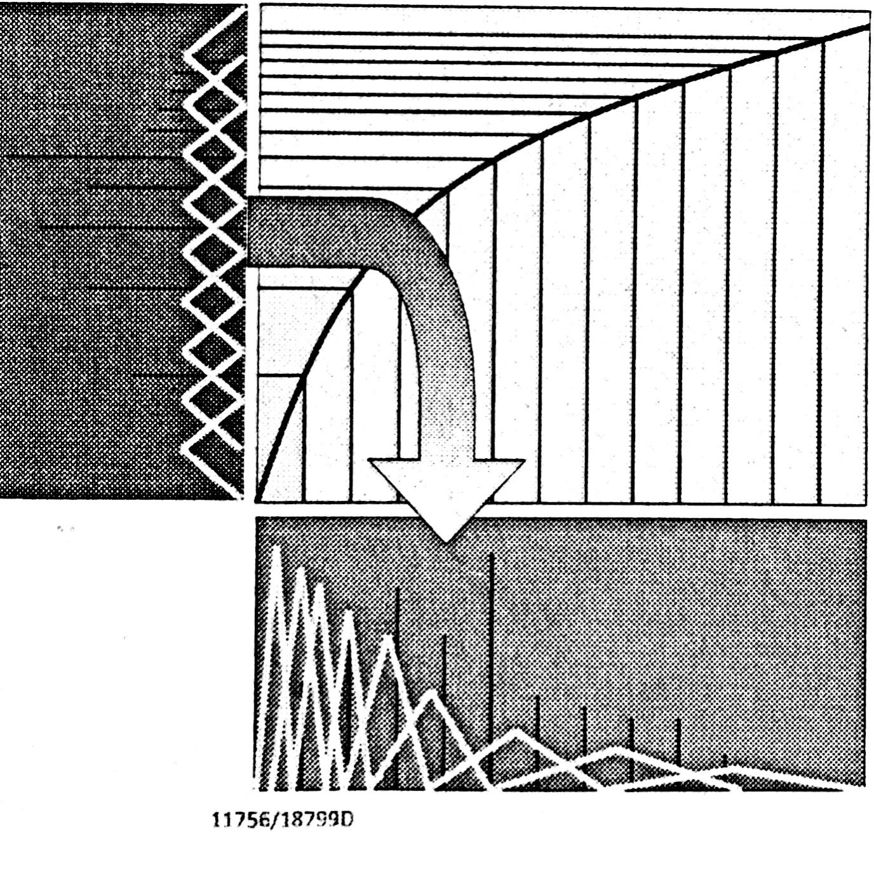

提取MFCC特征
MFCC是语音的一个特征, 在语音识别里面有重要的作用。下面讲解其中一种形式。
可以直观理解：每一小帧的声音信号提取出一个39维的向量。
39 = (12 + 1) * 3。这就是MFCC特征的组成，下文会讲解这一条分解的式子的来源。
提取MFCC特征流程如下：
- 分帧
- 预加重
- 加窗
- 转换到频域
- 求能量谱
- 通过 Mel 滤波器
- 离散余弦变换
- 差分
分帧
对音频信号进行分帧有利于后面的处理，也能够提取到足够多的信息。每一帧的长度在20到25ms之间。帧与帧之间的重叠在10ms左右。数值可以有些许调整，一般来说，移动的距离大约为帧长的三分之一到二分之一之间。
预加重
预加重的目的：高频的声音信号能量比较小，从能量谱来看，会有一个能量随着频率升高而下降的趋势。
预加重的公式如下所示：
这条差分的公式可以有效增大高频的能量。
加窗
加窗的目的：避免频谱泄漏的情况发生。
具体可以看ni的这一篇文章，很好理解。直观上理解，就是通过一个函数，使得这一帧的边缘能够变化不那么剧烈，减小不连续性，减少多余的频率成分。
窗的种类有很多种。主要分为余弦窗和几何窗。
余弦窗有以下的几种：
- Hamming窗:
这里仅仅举出Hamming的公式，其他的可以在网上查找，大同小异。其中的M是窗的长度。
Hanning窗
Blackman窗
几何窗有矩形，梯形，三角形窗，比较直观。
转换到频域
对每一帧的语音信号进行转换，求得频域。
可以使用FFT，如果对于速率要求没那么高，可以使用DFT。
DFT的公式如下所示：
DFT想要取多少个频率的值可以自己确定。没有找到什么有关的资料可以给出大致的范围。
然后就可以通过得到的频域结果求得能量谱。横坐标是频率，纵坐标是能量。
直接用上面的公式直接计算会比较麻烦，一般用欧拉公式展开，然后通过求实部和虚部的平方和，直接求出能量是多少。
Mel滤波器
过Mel滤波器的目的，主要是基于下面几个人耳的特性：
- 对于高低频信号的不同的分辨程度，在低频，我们感知更加敏感，在高频，声音变化需要更大，人耳才能感知得到。
- 人耳的每个细胞对应这一个频带，而且在这个频带中间有一个感知力的最值。
可以通过下面的图非常形象地了解整一个过程。（三个图分别称为左边图，下边图和warping function图，即右边图）

从理解的角度，要看下看到左：一个频域的数据通过warping function，变型成左边的信号，然后再过一系列的三角滤波器，把掉落到各个滤波器的能量分别加以统计，得到结果。这样处理之后，就相当于对频率信号做了下面图的滤波器的处理。
从实现的角度，这里有一个实现方案：左边的等间距的三角滤波器有很多边界（滤波器个数加1），把这些边界通过warping function，映射到下图的各个三角形的边界上。这样就得到了下边图的范围。然后对于下边图的每一个频率都对应到一个三角滤波器的范围。加以处理（相乘）叠加统计之后，等到每一个滤波器里面的能量。
离散余弦变换
对提取到的Mel能量谱进行离散余弦变换，取前12个值。然后把每个滤波器的能量叠加起来，成为第13个特征。
离散余弦变换的实现，可以参考维基百科中的公式。具体实现比较简单。
差分变换
目的：人的声音有很多信息是在时间有关的，通过差分可以引入时间的变化。
为此引入两组特征，速率特征和加速度特征，
按照下面的一公式可以把当前的13个特征转变成39个特征:
速率特征:
加速度特征:
除了以上的实现，还有一种实现，感觉更好一点。可以参考这一篇文章。
最后
对每一个帧做上述处理之后，就可以得到很多个39维的MFCC特征。这些特征就是接下来要进行训练的“材料”了。